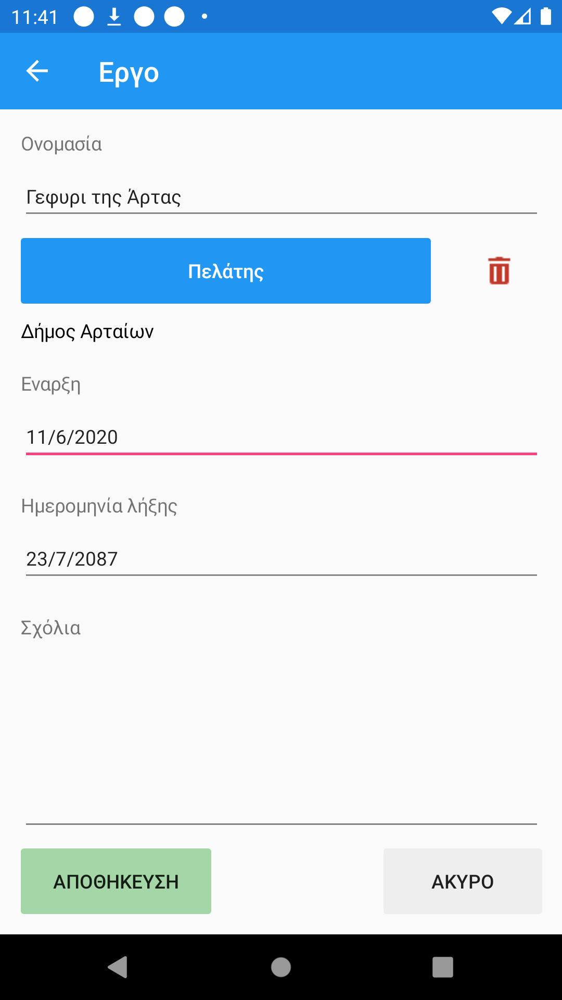
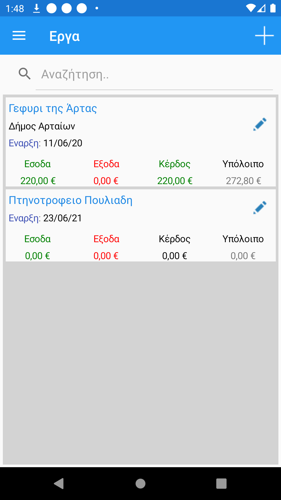

Όταν δημιουργούμε νέο έργο εμφανίζεται η παρακάτω οθόνη:
Το έργο μπορεί να συνδεθεί με ένα πελάτη. Όταν εκδίδουμε τιμολόγιο στον πελάτη αυτόν, θα προτείνεται από την εφαρμογή η σύνδεση του τιμολογίου με αυτό το έργο. Τα τιμολόγια πωλήσεων αυξάνουν τα έσοδα του έργου. Όταν εκδίδεται τιμολόγιο, ο χρήστης είναι ελεύθερος να αλλάξει το προτεινόμενο έργο και να κάνει σύνδεση με άλλο έργο η με κανένα έργο.
Όμοια, τα παραστατικά αγορών και εξόδων, όταν συνδέονται με κάποιο έργο αυξάνουν τα έξοδα του έργου.
Στην παρακάτω εικόνα βλέπουμε την λίστα με τα έργα που έχουμε δημιουργήσει:
Για το πρώτο έργο έχει εκδοθεί ένα τιμολόγιο με καθαρή αξία 220 ευρώ που εμφανίζεται στα έσοδα. Η αξία με τον ΦΠΑ είναι 272,80 ευρώ και επειδή δεν έχει γίνει κάποια είσπραξη από τον πελάτη, αυτή εμφανίζεται στο υπόλοιπο. Τιμολόγια αγορών δεν έχουν καταχωρηθεί ακόμα και έτσι το έξοδα ειναι μηδεν. Το κέρδος ισούται με έσοδα - έξοδα.